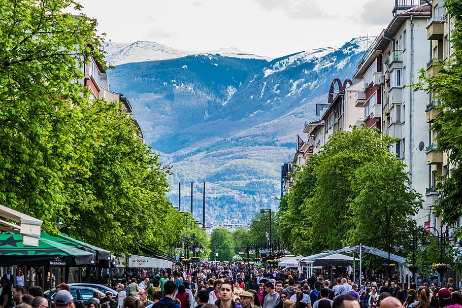
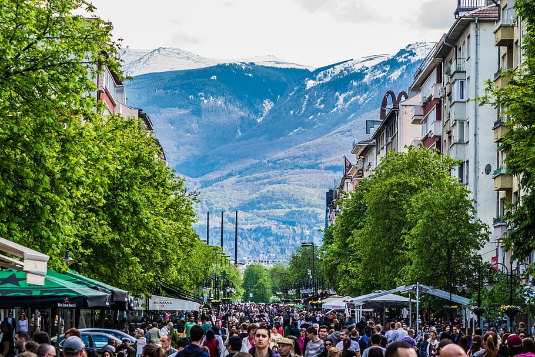

Dublin, Ireland

Geographical Location: Western Europe
Dublin City is the capital city of the Republic of Ireland and is located in the east of Ireland.
Dublin was originally a Viking settlement called Dubh Linn which translates to black pool.
Dublin has always been a historically significant city in Irish history,
from being the main city from which the British ruled over Ireland for 800 years
to then being the setting of the 1916 Easter Rising and Irish War of Independence.
Today Dublin is a developed city boasting one of the strongest tech sectors in Europe and a booming tourism industry.
Dublin is renowned for its sites such as the GPO, Croke Park, O'Connell Street, Temple Bar and Saint James Gate,
which is where Guinness is brewed.
Dublin is also surrounded by great coastal towns such as Dun Laoghaire, Howth and Skerries.
Photo Gallery


- The GPO was used in the 1916 Easter Rising as a rebel holdout. Scars from the battle such as bullet holes are still visible on its pillars today.
- Croke Park is Ireland's largest stadium, known for hosting the All-Ireland football and hurling finals annually. It has a capacity of 82,300 making it the 4th largest stadium in Europe.
- O’Connell Street is Ireland’s main street. It’s named after Daniel O’Connell, an Irish politician who fought for the unrepresented Irish catholics
to have a voice in the British parliament whilst Ireland was still under British rule.
A statue was built in his honor at the end of the street. - Temple Bar is an area of Dublin City Centre that is named after the world famous pub, the Temple Bar.
It is a tourist hotspot and is the only pub in Ireland where you will not find a single Irish person.
It is also known to have one of the most expensive pints of Guinness in Ireland. - Saint James's Gate is where Guinness is brewed. You are able to do a tour of the facility to see the history of Guinness, how Guinness is brewed and have a pint right from the source.
Prague
Geographical Location: Central Europe
Prague is the location of several University of Michigan Study Abroad programs. Many schools such as LSA, Ross, Engineering,
and School of Information send students annually
to Eastern Europe to explore an international education for their desired topic.
Prague is a country in central Europe. It is the capital of Czech Republic. It has a lot of historical features and buildings.
It is a beautiful city with a ton of architecture. Prague is a very popular destination spot for tourists.
Photo Gallery


- Prague at Sunset
- Prague Dancing House
- Prague Decor
- Prague Sculpture
- Lonely Planet
Jungfrau Switzerland

Europe
Jungfrau is a city in Switzerland known for its mountain summits nicknamed the “top of Europe.” It is very famous also for its railway created in 1912 that can bring you to a height of 3454m. At the summit there are outstanding views where you can see the whole city and beyond. The scenery consists of valleys, waterfalls, rock walls, and snow peaks. When visiting, it is vital to go on a day with good weather because it enhances the quality of the views. Hiking is very popular at short trails called Grutschalp and Murren. A very common tourist attraction is also exploring the Lauterbrunnen valley.
Photo Gallery


- Tourists can take the train and elevator up to that building on summit
- Train on railway that takes you to the top of the summit
- Houses located in Jungfrau for people to stay at
- Body of water located in Jungfrau fun for swimming
- Tourists can go to the spot to look out over the country
Sofia, Bulgaria
Geographical location: Europe
Sofia is the capital city of Bulgaria, a country located in Eastern Europe. It is part of the European Union and the primary language spoken is Bulgarian. The city’s population is around 1.3 million. In addition to its urban structures, Sofia also contains a mountain peak called “Vitosha”. Vitosha is located 30 minutes from the capital’s center, and can be reached by foot, car, and by lift. The peak has an elevation of 7,520 feet and during the summer months the average temperature is around 64 degrees fahrenheit. This makes it a great sight for any type of traveler who seeks the outdoors.
Photo Gallery
 



- Located in the city’s center, St. Alexander Nevsky Cathedral displays some of Sofia’s grand architecture.
- Vitosha boulevard is often packed with both locals and tourists and contains shops, restaurants, live music, and great views.
- The peak of Vitosha mountain offers a great view of Sofia from above.
- A picturesque street giving insight into the locals' lives and the city’s public transport trams.
- One of Sofia’s famous roads, this street is paved with an interesting material: yellow cobblestones. Being one of the first streets in the entire city, it was first paved in 1907 and continues to be maintained to this day.
Paris, France

Geographical Location: Europe
A city of culture, rich history, and fantastic food, Paris lives up to its iconic reputation in many ways. With notable landmarks including the Eiffel Tower, the Louvre, the Notre Dame, and the Arc de Triomphe, there is a long list of attractions that entice tourists from all over the world. If you get hungry, go visit one of the many Michelin-starred restaurants this city has to offer.
This magnificent city houses treasures like the Mona Lisa, and the Musée d'Orsay, showcasing various impressionist masterpieces. From the romantic allure of the Champs-Élysées to the winding Seine river, Paris is a magical place that cannot be rivaled.
Photo Gallery


- The magnificent Eiffel Tower in all it’s glory.
- The Louvre hosts some of the most famous works of art in the world, including the Mona Lisa!
- The Notre Dame is an iconic cathedral known for its Gothic features and dark history.
- The Arc de Triomphe is a famous monument dedicated to those who fought and died during the French Revolution.
- Dramatic sunset over the river Seine.
Auckland, New Zealand

Geographical Location: Oceania
Auckland is the largest city in New Zealand located on the Northern Island of the country. The city's population is just below 1.7 million people. Auckland is known as the “City of Sails” for its plethora of sailboats and yachts. The vast amount of waterfronts and harbors are conveniently located for sailors to embark on their hobbies.
Aside from sailing and waterfronts, Auckland is also surrounded by 48 volcanoes and a few rainforests. The climate of Auckland is mild-temperate. The winters are not too cold (averaging 64 degrees Fahrenheit) and summers mildly harsh (around 80 degrees Fahrenheit).
Photo Gallery


- Located in Western Auckland, Browns Island is home to one of the oldest volcanoes. It erupted over 20,000 years ago, and has since been become a famous tourist destination
- Eden Park is New Zealand's largest stadium located in Auckland, with a capacity of 50,000. The stadium has been the country's largest since 1910, and has hosted rugby, cricket, and soccer games.
- Built in the 1920s, the War Memorial Museum in Auckland is one of the oldest and most significant museums in New Zealand. It serves as a homage to the country’s military, and is also a research institution for social and environmental matters.
- Tiritiri Matangi Island is located in Auckland and is among the oldest wildlife sanctuaries in the country. The island is brimming with animals unlikely to be found on the mainland. It is also known as a nature conservancy island.
- Constructed in 1954, the Auckland Harbour Bridge connects the main city to the north shore. It is a bridge for motor vehicles with 8 lanes. The bridge is also equipped with 90,000 LED lights, allowing it to shine bright at night.